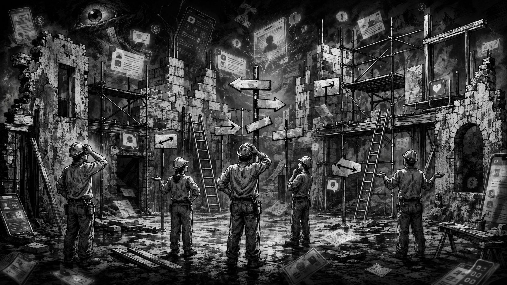

改善しようとして、逆に壊れるSNSスクールの話

どーも、とーるです。
最近、SNSマーケティング系のスクールや、
「卒業後はチームで案件を回します！」
「受講生同士で仕事を紹介し合える環境です！」
みたいなビジネスを見ていて、ずっと気になっていることがあります。
それは、
改善しようとしているはずなのに、改善するたびに現場が混乱している。
ということです。
最初は、普通のSNSスクールだったはずなんです。
投稿の作り方を学ぶ。
SNSの運用方法を学ぶ。
案件の取り方を学ぶ。
そこまではいい。
でも、受講生が増えたり、運営が大きくなったりすると、
「もっと受講生が活躍できる環境を作ろう！」
「卒業後も仕事につながる仕組みを作ろう！」
「今後はチーム化して案件を回そう！」
と、いろいろな制度が追加されていきます。
言っていることは素晴らしいんです。
でも、いざ始まってみると、
以前よりも動きにくくなる。
質問が増える。
不満が増える。
最終的には、誰も責任を取りたがらなくなる。
今日は、そんな「改善したら逆に壊れた」という話です。
「自由に動いていいよ。ただし全部確認してね」
SNSスクールのチーム化で、よくある会話があります。
運営側はこう言います。
「これからは、もっと主体的に動いてください！」
「自分たちで案件を取ってきても大丈夫です！」
「チーム内で自由に協力してください！」
おお。
いいじゃないですか。
自立型のコミュニティ。
受講生主体の運営。
理想的です。
……と思った数分後。
「でも、案件を受ける前に運営へ確認してください」
「クライアントとの連絡はリーダーを通してください」
「報酬の配分は運営側で決定します」
「使用する資料や提案内容はこちらで統一します」
自由どこ行ったん。
「好きに動いていいよ」
と言われたから動こうとしたのに、
動いたら、
「それは勝手にやらないでください」
と言われる。
そうなると、受講生側も分からなくなります。
どこまで自分で決めていいのか。
何をしたら越権行為になるのか。
クライアントと直接話していいのか。
問題が起きたら、誰が責任を取るのか。
案件を取ってきたのは自分なのに、なぜ報酬は運営が決めるのか。
結果、誰も動かなくなります。
だって、
自分で考えて動いたら怒られるかもしれない。
でも動かなかったら、
「もっと主体性を持ってください」
と言われるんです。
SNSスクール特有の、自由と統制のハイブリッド地獄です。
「とりあえずチームを作りました」が一番危ない
チーム化自体が悪いわけではありません。
デザインが得意な人。
文章が得意な人。
動画編集が得意な人。
営業が得意な人。
それぞれの得意分野を持ち寄ることができれば、一人ですべてを抱えるより効率は上がります。
提供できるサービスの幅も広がります。
ただ、SNSスクールのチーム化では、なぜか順番が逆になることがあります。
本来なら、
- どんな案件を受けるのか決める
- 誰がどの責任を持つのか決める
- 報酬の計算方法を決める
- クライアント対応のルールを決める
- 問題が起きた際の責任者を決める
- そのうえで人を集める
この順番になるはずです。
でも実際は、
「受講生が増えてきたので、チームを作ります！」
から始まる。
メンバーをグループに分ける。
リーダーを決める。
チャットルームを作る。
それっぽいチーム名をつける。
ここまでは早いんです。
なぜかチーム名だけは、その日のうちに決まります（笑）
でも、
誰が営業するのか。
契約書は誰が用意するのか。
クライアントから修正依頼が来たら誰が対応するのか。
納期に遅れたら誰が謝るのか。
報酬は売上から何を引いて分配するのか。
この辺は決まっていません。
そして案件が始まってから、
「あれ？これ、誰がやるんですか？」
となります。
問題が起きる。
新しいルールが追加される。
また別の問題が起きる。
さらにルールが追加される。
昨日までOKだったことが、今日からNGになる。
これは改善ではありません。
ずっと火事を消しているだけです。
案件紹介が「仕事の機会」ではなく統制になる
SNSスクールの魅力として、
「案件紹介があります」
というものがあります。
初心者にとっては、かなり魅力的です。
実績がない。
営業経験もない。
どこから仕事を取ればいいのか分からない。
そんな状態で、スクール側から仕事を紹介してもらえるなら助かります。
ただ、この案件紹介が徐々におかしくなるケースがあります。
最初は、
「経験を積むための案件紹介」
だったはずなのに、
いつの間にか、
「運営のルールに従う人だけが案件をもらえる」
という構造になる。
リーダーに気に入られている人。
イベントへ積極的に参加する人。
運営の投稿をシェアする人。
コミュニティ内で発言が多い人。
こういう人に案件が集中し始める。
反対に、実力はあっても静かに活動している人には回ってこない。
案件の評価基準が、
技術や納期、クライアント満足ではなく、
コミュニティ内での振る舞いになっていくんです。
こうなると、仕事を紹介する仕組みではありません。
所属を維持させるための統制装置になります。
「案件をもらえるかもしれないから退会しづらい」
「運営に意見すると、紹介されなくなるかもしれない」
「リーダーと合わないけど、我慢しないと仕事が来ない」
自由に働きたくてSNS起業を学び始めたのに、
気づけば会社よりも気を使っています。
会社なら給料が出ますが、
こちらは月額費用を払って気を使っています（笑）
報酬の話を曖昧にしたまま「仲間」を強調する
チーム化ビジネスでもう一つ起きやすいのが、
社会規範と市場規範の混在です。
最初はこう言われます。
「仲間同士で助け合いましょう！」
「みんなで成長していきましょう！」
「お金だけではなく、経験を大切にしてください！」
でも、実際に行っているのは仕事です。
クライアントがいる。
納期がある。
成果物を提出する。
修正対応もある。
当然、報酬の話が必要になります。
ところが、報酬について質問すると、
「最初からお金の話ばかりするのはどうなんでしょう」
みたいな空気になることがあります。
いや、仕事なんよ。
仲間だから無償で手伝う。
経験になるから安くてもやる。
将来につながるから今は我慢する。
もちろん、本人が内容を理解して、納得したうえで選ぶなら問題ありません。
でも、運営側だけが利益を得て、
現場には、
「経験」
「仲間」
「成長」
という言葉だけが配られているなら、少し考えた方がいい。
報酬の話をすると空気が悪くなる組織ほど、
だいたい報酬体系が整っていません。
突然の「本当の私ではありませんでした」で、過去まで壊す
運営がうまくいかなくなったり、
今までの売り方が通用しなくなったりすると、
Instagramで突然こんな投稿が始まることがあります。
「今までの私は、本当にやりたいことができていませんでした」
「周りの期待に応えようとして、自分を見失っていました」
「売上ばかりを追いかけて、本来の私ではなくなっていました」
「これからは、もっと自分らしく生きていきます」
本人としては、
過去を正直に告白している。
弱さを見せて共感してもらっている。
新しい自分へ進むための決意表明をしている。
そんな感覚なのかもしれません。
コメント欄にも、
「気づけてよかったですね」
「無理してたんですね」
「これからは自分らしく生きてください」
と、優しい言葉が並びます。
でも、少し待ってください。
いやいや。
その「本当にやりたいことではなかったサービス」に、お金を払った人がいるんです。
あなたの言葉を信じて申し込んだ人がいる。
あなたが、
「これが必要です」
「この方法で人生が変わります」
「私はこの仕事に本気です」
と言ったから、購入を決めた人がいるんです。
それなのに数か月後、
「実は、本当にやりたいことではありませんでした」
と言われたら、
買った側はどう受け取ればいいのでしょうか。
「あのとき言っていたことは何だったの？」
となりますよね。
方向転換すること自体は悪くありません。
人の考えは変わります。
実際にやってみて、
「これは自分には合わなかった」
と気づくこともあります。
提供しながら、
「もっと別の形で届けたい」
と思うこともあります。
ただ、
自分が変わったことと、過去の責任がなくなることは別です。
そこを一緒にしてはいけません。
「私は無理をしていました」
「本当の私ではありませんでした」
という言葉を使うと、本人は被害者のように見えます。
でも、その“無理をしていた時期のあなた”を信じて、
お金を払った人がいる。
サービスを紹介した人がいる。
一緒に仕事をした人がいる。
チームとして動いた人がいる。
自分の物語だけをきれいに書き換えると、
そうした人たちが、全員置いていかれます。
しかも、
過去のサービスを否定したあとに、
「本当の私が届けたい新サービス」
が始まったりします。
また売るんかい。
という話です（笑）
今までの自分を否定する。
同情や共感が集まる。
新しい価値観を発表する。
そして、新商品を販売する。
これが一つの販売パターンになっている人もいます。
もちろん、本人に悪気はないのかもしれません。
ただ、見ている側からすると、
反省なのか。
自分語りなのか。
販売前の前振りなのか。
だんだん分からなくなります。
本当に誠実に方向転換するのであれば、
「本当はやりたくありませんでした」
だけでは足りません。
今まで購入してくれた人に、何を提供できたのか。
提供できなかったことは何か。
現在の顧客へのサービスは、今後どうするのか。
過去に発信した内容について、今はどう考えているのか。
そこまで話して、初めて説明になります。
自分の気持ちを告白するだけでは、
説明責任を果たしたことにはなりません。
それは透明化というより、
自分に都合よく過去の物語を書き直しているだけ
になってしまいます。
「アップデートします」の目的が誰にも分からない
こうした混乱が続くと、
運営は大きな改革を発表します。
「スクールを大幅アップデートします！」
「新しいチーム制度を導入します！」
「より受講生主体のコミュニティへ進化します！」
言葉はすごいです。
なんか良くなりそうです。
ただ、具体的に聞いてみると、
何を解決したいのかが分からない。
案件数を増やしたいのか。
受講生の満足度を上げたいのか。
運営の負担を減らしたいのか。
卒業後の仕事を作りたいのか。
売上を増やしたいのか。
ここが曖昧なまま、
「アップデート」
だけが始まります。
すると現場も迷います。
何をすれば評価されるのか。
今後どのスキルを身につければいいのか。
チームに残るべきなのか。
個人で活動してもいいのか。
目的がない改革は、
変更すること自体が目的になります。
チャットツールが変わる。
チーム名が変わる。
役職名が変わる。
月1回だったミーティングが月2回になる。
新しい理念が発表される。
運営者のプロフィール写真も変わる。
でも、根本的な問題は何も変わっていない。
雰囲気だけ改革です。
これ、どこかで見た構造なんです
ここまで読んで、
「こういうスクール、あるなぁ」
と思った方もいるかもしれません。
実はこの流れ、
SNSスクール特有のものではありません。
もっと大きな組織でも、似たようなことは何度も起きています。
古いルールを残したまま、新しい自由を導入する。
制度が整う前に組織だけを変える。
情報公開を急ぎすぎて混乱が広がる。
改革の目的が曖昧なまま、変更だけを続ける。
内部の抵抗や利害関係を放置する。
この構造にかなり近いのが、ペレストロイカです。
もちろん、ソ連の改革とSNSスクールを、まったく同じものとして扱う話ではありません。
規模も背景も違います。
ただ、
改善しようとしたときに起きる組織の失敗パターン
は、かなり似ています。
古い統制は残っている。
でも自由化も進めたい。
情報公開も行う。
組織も変える。
一気に全部やろうとする。
その結果、現場では、
「結局、どのルールに従えばいいの？」
という状態が起きる。
SNSスクールでも、
「自由に案件を取っていい」
と、
「案件はすべて運営が管理する」
が同時に存在すれば、同じような混乱が起きます。
「これからは自分らしく生きます」
と宣言しながら、
既存顧客への対応が何も決まっていなければ、
現場には混乱だけが残ります。
人間が組織を作る以上、
規模が変わっても失敗の構造は、そこまで変わらないんです。
改善するなら、まず順番を決める
では、SNSスクールやチーム型ビジネスを改善するには、
どうすればいいのか。
大事なのは、
新しい制度を増やすことではありません。
まず、何を解決したいのかを一つに絞ることです。
「案件数を増やす」が目的なら、
営業と案件管理の仕組みを整える。
「受講生の自立」が目的なら、
運営の許可が必要な範囲を減らす。
「品質を安定させる」が目的なら、
評価基準とチェック体制を決める。
「チーム化」が目的ではありません。
チーム化は手段です。
「コミュニティ化」も目的ではありません。
「自分らしく生きる」も、顧客への説明にはなっていません。
そのうえで、
- 誰が決めるのか
- 誰が責任を取るのか
- 誰にいくら支払われるのか
- 何をしたら評価されるのか
- どこまで自由に動いていいのか
- 辞めたいときにどう抜けられるのか
- 既存顧客への提供はどうするのか
ここを先に決める。
情報を公開する際も、
まず事実を整理する。
関係者に説明する。
現在の顧客への対応を決める。
再発防止策を作る。
そのうえで全体へ共有する。
この順番です。
改善とは、
新しい仕組みを追加することではありません。
現場の人が、迷わず動ける状態を作ることです。
改善しているのに混乱が増えるなら
もし今、
チーム化したのに案件が回らない。
自由にしたのに誰も動かない。
リーダー制度を作ったのに不満が増えた。
方向転換を発表したら、既存顧客が戸惑っている。
ルールを増やしたのに質問が減らない。
そんなことが起きているなら、
メンバーのやる気だけを疑う前に、
仕組みを見直した方がいいかもしれません。
現場が動かないのは、
能力がないからでも、
主体性がないからでもなく、
動いたときに何が起きるか分からないから
というケースがあります。
ルールが曖昧。
責任が曖昧。
報酬も曖昧。
今後の方針も曖昧。
でも、
「主体性を持ってください」
「自分らしく動いてください」
だけを求められる。
それで動ける人は、かなりのギャンブラーです（笑）
改善しようとして、逆に壊れる。
これは珍しい失敗ではありません。
昔から何度も繰り返されてきた、
かなり定番の失敗パターンです。
だからこそ、勢いで改革を始める前に、
何を変えるのか。
なぜ変えるのか。
何を残すのか。
誰が責任を持つのか。
すでにお金を払ってくれた人へ、どう向き合うのか。
その順番から設計してみてください。
新しい制度を導入することより、
新しい自分を発表することより、
現場の人や顧客が迷わないこと。
それが、本当の意味での改善だと僕は思います。
とーる｜行動経済アナリスト